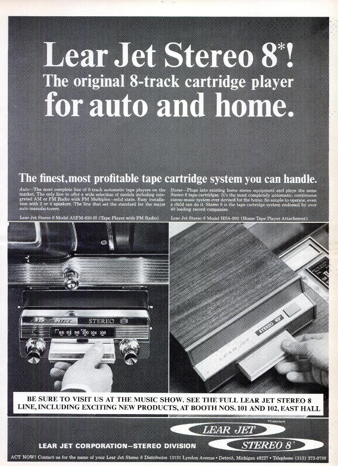

A Forgotten Technology
Introduction
8-Track Tape, or more formally Stereo 8, was a continuous audio tape cartridge format, popular from the late 60s to the early 80s. It was developed by Bill Lear's Jet Corporation in 1963. They were primarily popular in the automobile industry and to a lesser degree in the home market. Pre-recorded tapes were available, as well as blank tapes, although they were not as popular. The tapes were continuous, drawing and winding on to one, free spinning reel. Tape was driven by a capstan and consisted of four stereo programs, totaling eight stereo tracks giving it its name. The 8-track eventually lost popularity to the compact cassette in the early 80s due to its many technical flaws.
